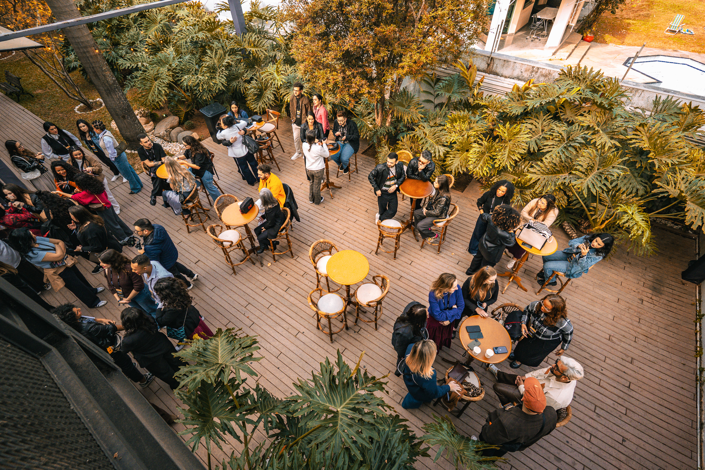

Um respiro arquitetônico. Ambiente desconstruído com iluminação natural e paisagismo integrado — o cenário perfeito para o ápice do networking.
A casa das grandes empresas. Um espaço de eventos corporativos com arquitetura impactante, versatilidade e conexão com a natureza, no coração da zona oeste de São Paulo.
A Área Garden é um respiro arquitetônico. Ambiente desconstruído com iluminação natural e paisagismo integrado — o cenário perfeito para o ápice do networking e experiências corporativas ao ar livre.